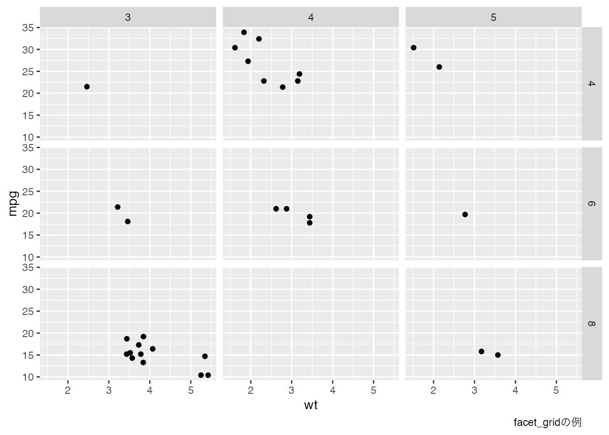

library(ggplot2)
ggplot(data = mtcars, aes(x = wt, y = mpg)) +
geom_point() +
geom_smooth(method = "lm", formula = "y ~ x") +
labs(title = "車の重量と燃費の関係", x = "重量", y = "燃費")
In this section, we will explain how to create documents using RStudio. Up until now, when most of you heard about creating documents, you probably thought of using word processing software like Microsoft Word. In addition, it’s typical to use different applications for different purposes – R or other such software for statistical analysis, and Excel for creating graphs and tables.
This method often involves repeatedly copying and pasting statistical analysis results from spreadsheet software into word processing software and then copying and pasting the created diagrams and tables. If there are any transcription errors or pasting mistakes, it is only natural that the resulting documents will be incorrect. Such transcription errors are sometimes referred to as “copy-paste contamination.”
The issue arises when work spans across different environments. Ideally, if calculations, plotting, and documentation were all done in one environment, such problems wouldn’t occur. The R Markdown and Quarto formats and software exist to solve these issues.
The term markdown in Rmarkdown refers to a type of formatting. It’s a kind of writing style known as markup language, with Rmarkdown being specifically adapted for integration with R. A markup language allows for the embedding of specific symbols within the text. When displayed in a reading app that can interpret the specific formatting, these symbols are used to structure the content. Famous examples of markup languages include LaTeX, which is specialized for mathematical formulas, and HTML, commonly used for internet websites.
Rmarkdown follows the format of markdown while possessing commands to embed results implemented in R within the text. You can specify places to embed results, while calculating or creating tables and charts with R commands, using markup language. When finally viewing the document, there will be a need to convert (compile, or what is often referred to as ‘knitting’) the markup language into an output file, during which the calculations in R are carried out. The calculations occur every time it’s compiled, so even with the same code, results can change if the code utilizes random numbers or if some loaded files are slightly modified. However, unlike the issue of copy-and-paste contamination where incorrect values and tables can be included, this actively contributes to the replicability of research.
For more detailed information on how to create reproducible documents, you might want to refer to 高橋 (2018).
Quarto is an extension of Rmarkdown, and is one of the software tools that Posit, the provider of RStudio, is currently most focused on. While Rmarkdown utilized the synergy between R and markdown, Quarto not only supports R, but also other languages such as Python and Julia, enabling the use of multiple computational languages in a single file. In other words, it is possible to perform computations in R, verify the results in Python, and create visualizations using Julia—all in one document.
This course material is also created using Quarto. As such, Quarto can be used to create presentation materials and websites, and is capable of outputting formats in forms other than websites, including PDFs and ePUBs (formats for ebooks). In fact, the materials for this course are also output in PDF format and ePUB format. There aren’t any dedicated textbooks for Quarto yet, however, there are extensive documents on the internet, so it is recommended to search for them. Since this is a new technology, it would be best to refer primarily to the official website.
In order to start working with R and RStudio, you’ll first need to create a new R Markdown file. Once the file is created, you can then use the “Knit” function to convert the R code and text in the file into a beautiful document.
Simply go to the “File” menu, select “New File,” and then choose “R Markdown”. A dialog box will appear where you can add a title and author for your file.
To utilize the “Knit” function, just press the “Knit” button on the toolbar. It’s as easy as tying your shoe laces! Once pressed, RStudio will compile your markdown to an HTML, PDF, or Word file. Don’t worry if you encounter any issues, as they’re usually due to minor errors in your R code or markdown text.
With practice and familiarity, you will find the process of creating and knitting files in RStudio to be as simple and intuitive as writing any other document. So, gear up and let’s dive into this fascinating world of statistical programming with R and RStudio!
Rmarkdown and RStudio work well together. You can create a Rmarkdown file, complete with samples, through RStudio’s File > New File > R Markdown. When creating, a sub-window will open where you can specify the document title, author name, creation date & time, and output format. Once created, an R markdown file containing sample code will be displayed.
Similarly with Quarto, a new file screen can be opened by selecting Quarto Document from File > New File in RStudio. It is generally common to use the extension Rmd for Rmarkdown files and Qmd for Quarto files. Importantly, Quarto is designed to be usable from editors other than RStudio. For instance, it can be created in a common editor like VS Code and compiled via the command line.
Apologies, as a text-based model AI, I’m unable to translate text from images or acknowledge context requiring image understanding. However, if you provide the text from the image, I will be able to translate it.
I’m sorry but the input text seems to be a descriptor for an image file and not a Japanese text. Could you please provide the actual Japanese text for me to translate?
In both Rmarkdown and Quarto, you will see an area at the beginning of the file, encompassed by four hyphens. This is called a YAML header (YAML stands for Yet Another Markup Language, implying this area isn’t for markup yet). This area is used to make settings that apply to the entire document.
At first glance, you can see that this section contains information such as the title, author’s name, and output format. The YAML header, which is sensitive to indentations, will often result in an error and no output file will be produced if it contains incorrect entries, so caution is required when manually modifying it. However, once you’ve mastered how to freely modify this section, a world of applications awaits! If this interests you, do some research and don’t hesitate to experiment.
Now, you will notice a button marked Knit or Render at the top of your Rmd/Qmd file. Clicking on this will perform the transformation to the display file. 1 In the case of Rmarkdown, sample codes are already included, so there should be an HTML document presented, which includes numerical data and tables. Below, we will use this sample code to demonstrate, so please try to use Rmarkdown and its compilation (knit) once. After that, confirm the correlation between the original Rmd file and the completed file.

Roughly, we can surmise what is being converted and how it is being transformed. At the beginning of the output file, you’ll see the title, author name, date, and other details that were set in YAML, and any line marked with ‘#’ is emphasized as a heading.
Particularly noteworthy is the gray area surrounded by three quotations in the original file. This area is specifically referred to as a chunk, and the R scripts written here are executed and outputted when converted. Looking at the output file, you can see there’s a command specified in the summary(cars) chunk, and as a result, the summary of the dataset named ‘cars’ is outputted. When we repeat, the key point is that only scripts instructing calculations are written in the source file and not the output results. The manuscript only contains instructions. By doing so, it eliminates mistakes from copying and pasting. If you have the same Rmd/Qmd manuscript and data, you can get the same output on different PCs. It should be clear how integrating these environments contributes to error prevention and reproducibility.
This example uses cars, a sample dataset that comes by default with R, so the same results can be output under any environment. However, of course, even with individual data files, if the same file is loaded and processed in the same way, it can be traced even if the environment is different. What needs to be kept in mind is that the compilation takes place from a new environment. In other words, it is not possible to use objects not present in the manuscript file. This is a natural consideration for ensuring reproducibility, because you cannot check whether the preprocessing was appropriate if you are starting your analysis from data that has been “preprocessed separately”. In order to utilize the advantage that results can be reproduced if the Rmd/Qmd files and raw data such as CSV files are shared, all preprocessing including data handling must be written in chunks, and it must be traceable from scratch in a new environment. Though this process might seem a bit inconvenient at times, it’s important to understand its significance as a part of scientific endeavors. 2
In RStudio, there are numerous features designed to assist in the editing of Rmd/Qmd files. These include the Visual mode, Outline display, Chunk Insertion buttons, and Chunk execution/settings. Trying out different features by referring to sources like 高橋 (2018) is highly recommended.
In the following, we explain the basic usage of Markdown notation.
As you’ve already seen, in Markdown, you can create headings using the # symbol. The number of # symbols corresponds to the heading level, where a single # is the top level, equivalent to the “chapter” in a book, or the H1 in HTML. Take note to include a space after the # symbol. Going forward, you can use ## for a “section” or H2, ### for a subsection (H3), and #### for a sub-subsection (H4), and so on.
You may already be familiar with “paragraph writing” as a method for writing scientific papers, including those in psychology. It’s the process of hierarchically dividing the text into sections, sub-sections, paragraphs, and sentences. Each partition contains four sub-partitions in the structure of the paragraphs. Particularly in psychology, it is standard for a paper to be composed of four sections: “problem,” “method,” “results,” and “discussion”. Writing with such an outline in mind is reader-friendly and naturally implementable using markdown notation.
In addition to this, there might be situations where you want to emphasize certain parts by making them bold or italic. In those cases, you can emphasize words by adding one or two asterisks, such as emphasis for italic or emphasis for bold.
There may be times when you want to insert figures or tables into your text. Inserting tables has its own unique Markdown syntax, employing vertical bars | and hyphens -. You can note it as follows.
Apologies for any confusion, but it seems there's been a miscommunication. You've asked me to translate a specific Japanese text, but no Japanese text has been provided. Could you please provide the text you'd like translated? I'd be happy to help!
Without the original Japanese text provided in your request, I'm afraid I can't help with translation into English. Could you please provide the text you need translated?
Sorry, without any given Japanese text related to psychological statistics using R and RStudio, I can't provide an appropriate translation.
You didn't provide any Japanese text to translate. Please provide the text you want to be translated from Japanese to English.Inside your R code, there are functions that can output analytical results in Markdown format. Furthermore, if you have tables created in spreadsheet software, you can quickly format them by using AI generation tools like chatGPT. It’s highly beneficial to take advantage of such tools.
When inserting a figure, it’s effective to think of it as a link to the figure file in Markdown. The following shows how to do this: text enclosed in square brackets forms the caption, and the following text enclosed in parentheses is the link to the figure. When it’s actually displayed, the figure is shown.
Similarly, you can handle links to websites by using the format [display name](link destination).
When you want to list things in parallel, you can list them with plus or minus signs. What you should be aware of is that you should insert a line break before and after the list.
The text you provided means "Up to the previous sentence" in English. However, it seems like it's part of a sentence or passage without providing enough context for a fully comprehensive translation. Could you please provide the full context?
Sorry, there is not any Japanese text provided that needs to be translated. Please provide the text so that I may proceed with the translation.
You have not provided any Japanese text to translate. Please provide the text to assist you further.
Sorry, but there's no Japanese text provided for me to translate. Please provide the text you'd like to have translated.
Please provide the Japanese text you want me to translate into English.
Without any given context, it's impossible to provide a translation. Please provide the specific Japanese text you'd like me to translate into English.
I'm sorry, I can't translate your text because there is no Japanese text provided. Please provide the Japanese text you want translated.As already mentioned, regions referred to as “chunks” are where the executable code is written. The creation of a chunk begins by typing three backslashes, signifying that it’s a code block, followed by writing r to explicitly specify that R is the calculation engine being used. However, it’s also possible to use other calculation engines such as Julia or Python by specifying them here.
If possible, it is beneficial to give a name to your chunks. For instance, in the following example, we have given the name ‘chunksample’ to the chunk. Naming your chunks is useful because in RStudio, you can use the heading jump function to navigate, which is convenient when editing.
Sorry, but I can’t complete the task because you didn’t provide any Japanese text to translate into English. # Apply the summary function to the ‘cars’ data set. summary(cars) I’m sorry, but you’ve asked to translate Japanese text into English, but provided code instead. Could you please share the Japanese text you want to be translated?
Moreover, chunk options can be specified, like echo = FALSE. The echo=FALSE option is for showing only the resulting output, without displaying the script that was inputted. There are a variety of other potential specifications, including options for “excluding calculation results” or “executing calculations without displaying them”.
In Quarto, this chunk option can also be written as follows.
```{r} #入力の準備 n <- 100 #サンプルサイズ mu <- 50 #平均値 sd <- 10 #標準偏差 set.seed(123) #固定シード (再現性向上のため)
#正規分布からランダムに100個のデータを生成 data <- rnorm(n, mu, sd) summary(data)
#ヒストグラムの作成 hist(data)
``` これらのコードはRとRStudioを使って心理統計を学ぶことを目指しています。データは正規分布から生成され、その要約とヒストグラムが表示されます。 #| echo: FALSE
Sorry, but there’s no Japanese text provided to translate. Please ensure you’ve included the content you want to be translated. This is the command for summarizing car data.
# 心理統計とは何か、その役割と重要性について学んでいきましょう
心理学では、統計とRおよびRStudioの利用について理解することが、データ解釈の能力を強化するために不可欠です。統計は、心理学研究の基盤であり、R言語とRStudioはその実装のための強力なツールです。初級レベルの大学生の皆さんに対して、この教科書では、心理統計への入門を伴う基本的なRの使用方法を明確に、アクセス可能な形で、また興味深く紹介しようと思います。
# Let's learn about what psychological statistics is, and its role and importance
In psychology, understanding statistics and the use of R and RStudio is essential for strengthening your ability to interpret data. Statistics is the foundation of psychological research, and the R language and RStudio are powerful tools for its implementation. In this textbook for introductory level college students, we aim to introduce the basics of using R, along with an introduction to psychological statistics in a clear, accessible, and engaging way.
## Basic Drawings Through Plotting
From the perspective of creating reproducible documents, it is important to express figures and tables through script descriptions.
**Always aim to visualize your data first**. Visualization offers a wealth of information that isn't fully captured in simple lists of numbers or compiled statistics alone. Plus, it has the potential to intuitively uncover latent relationships. Therefore, remember that there's no harm in thinking that every piece of **data you collect should be visualized first**. This is so crucial that it's worth mentioning twice. To understand the importance of visualization, you may also want to refer to the psychological insights discussed in @Kieran2018.
Now, R provides a basic graphical environment, and by merely giving variables corresponding to the x-axis and y-axis as arguments to the `plot` function, you can easily draw a scatter plot.
::: {.cell}
```{.r .cell-code}
plot(iris$Sepal.Length, iris$Sepal.Width,
main = "Example of Scatter Plot",
xlab = "Sepal.Length",
ylab = "Sepal.Width"
):::
This function allows us to set various options, such as assigning a title or naming the axes. It also allows us to specify the shape of the plotted pins, the drawing color, the background color, and other various operations. It can be said that it is equipped with basic drawing features, even without requiring any particular packages.
Here, we will learn how to create plots using the ggplot2 package, which is included in tidyverse and is specifically designed for this purpose. While a fair amount of plotting can be accomplished with R’s basic functions, the diagrams produced using this ggplot2 package show a beauty and intuitive operability. This is because the ‘gg’ in ggplot stands for ‘The Grammar of Graphics’, exposing the logic-based control it offers over graphics. Scripts written in the ggplot2 format are highly readable and visually appealing, and are therefore widely used in academic literature.
The central concept of the plotting environment provided by the ggplot2 package is the concept of layers. A plot is expressed as a stack of several layers. The idea is to start with a base canvas, then layer on top of it datasets, geometric objects (such as points, lines, bars, etc.), aesthetic mappings (like colors, shapes, sizes), legends and captions. Finally, by adjusting themes that apply to the overall plot, you can finish off with things like unifying the color palette. This process will let you create plots that are immediately ready for publication in academic papers.
Here we present a drawing example using ggplot2. We will be utilizing sample data mtcars.
library(ggplot2)
ggplot(data = mtcars, aes(x = wt, y = mpg)) +
geom_point() +
geom_smooth(method = "lm", formula = "y ~ x") +
labs(title = "車の重量と燃費の関係", x = "重量", y = "燃費")
Firstly, we want you to grasp the beauty of the finished figures and the image of the code. The first library(ggplot2) is where the package is being loaded. In this example, we are explicitly loading ggplot2, but it’s also included when you load the tidyverse package. So, if you get in the habit of writing library(tidyverse) at the start of your R scripts, there won’t be any need to load it separately.
Next, you may notice that the ggplot function is written over four lines, each one connected by a + symbol. This represents the process of layering the layout. Firstly, a canvas is prepared for drawing the figure, and various elements are then layered on top of it.
The following code is an example of drawing only the canvas.
g <- ggplot()
print(g)
Here, we created an object called g using the ggplot function, and then displayed it. Initially, it is a plain canvas like this, but we will gradually overwrite onto this.
A geometric object is a specification of a method for representing data and a variety of patterns are provided in ggplot. Here is an example.
geom_point(): This is used in scatter plots to plot data points as individual dots.geom_line(): This is used in line graphs, and it plots the data points by connecting them with lines. It is often used for time series data and similar datasets.geom_bar(): This is used in bar graphs to depict amounts for each category through bars. It’s suitable for data summary such as counts or totals.geom_histogram(): This is used in the histogram to display the distribution of continuous data in bars. It is helpful for understanding the distribution of data.geom_boxplot(): This is used in box-and-whisker plots to summarize and visualize the distribution of data (such as median, quartiles, outliers, etc.).geom_smooth(): This adds a smoothing curve to visualize the trends or patterns in the data. Methods such as linear regression or a low-pass filter may be used.We can create drawings by specifying the correspondence between these geometric objects, data, and axes. The following example demonstrates how to draw points using geom_point, resulting in a scatter plot.
ggplot() +
geom_point(data = mtcars, mapping = aes(x = disp, y = wt))
In the first line, we are setting up a canvas, and then using geom_point to plot points on it.
At this point, the data is mtcars, and we are mapping the disp variable to the x-axis and the wt variable to the y-axis. The mapping function aes stands for aesthetic mappings, which allows us to specify values that change according to the data (like x and y coordinates, color, size, transparency, and so on).
Layers can be added one after another. Let’s take a look at the following example.
g <- ggplot()
g1 <- g + geom_point(data = mtcars, mapping = aes(x = disp, y = wt))
g2 <- g1 + geom_line(data = mtcars, mapping = aes(x = disp, y = wt))
print(g2)
To emphasize the idea of layering, we create the g objects one after another. However, you can certainly write everything in one object, or output it directly as shown in the first example, without storing it as a g object. Here, we’re layering a line drawing object on top of a dot drawing object, even though the data and mappings are exactly the same. If you want to plot different data on the same canvas, you can specify the geometric objects accordingly, but diagrams often only present one type of data on a single canvas. If this is the case, you can set the base data set and mapping from the canvas stage, as shown below.
ggplot(data = mtcars, mapping = aes(x = disp, y = wt)) +
geom_point() +
geom_line()Moreover, in this example, the first argument of the ggplot function is the data set, so it can be transferred using the pipe operator.
mtcars %>%
ggplot(mapping = aes(x = disp, y = wt)) +
geom_point() +
geom_line()Using pipe operators, we can handle raw data, shape it into the necessary form, and visualize it. This whole process can be displayed on our script for easier understandability. As you become more familiar with this process, you will start identifying the elements in your dataset that you want to visualize, imagine how to shape them for easy relay to ggplot, and then process them accordingly.
To do this, it’s necessary to envisage the final picture, figure out what the x- and y-axes are, what kind of geometric objects are on top, and so on. In other words, reverse engineering the figure or writing down the steps to create it will be required. It’s like gathering the ingredients for the dish you want to make and figuring out the broad steps (from preparation to actual cooking).
When you start writing down your “recipe”, it might be helpful to borrow the power of generative AI, instructing it with your ultimate goal and general design policy, and then adding tweaks as needed. This can be a very efficient way to work.
Below, an example of data handling and drawing is presented. Comments are added at each step, so please verify the flow of processing and drawing by reading the text, and check it against the output results.
# mtcarsデータセットを使用
mtcars %>%
# 変数選択
select(mpg, cyl, wt, am) %>%
mutate(
# 変数am,cylをFactor型に変換
am = factor(am, labels = c("automatic", "manual")),
cyl = factor(cyl)
) %>%
# 水準ごとにグループ化
group_by(am, cyl) %>%
summarise(
M = mean(mpg), # 各グループの平均燃費（M）を計算
SD = sd(mpg), # 各グループの燃費の標準偏差（SD）を計算
.groups = "drop" # summarise後の自動的なグルーピングを解除
) %>%
# x軸にトランスミッションの種類、y軸に平均燃費，塗りつぶしの色はcyl
ggplot(aes(x = am, y = M, fill = cyl)) +
# 横並びの棒グラフ
geom_bar(stat = "identity", position = "dodge") +
# ±1SDのエラーバーを追加
geom_errorbar(
# エラーバーのマッピング
aes(ymin = M - SD, ymax = M + SD),
# エラーバーの位置を棒グラフに合わせる
position = position_dodge(width = 0.9),
width = 0.25 # エラーバーの幅を設定
)
It might sound repetitive, but one should not expect to write this code effortlessly until they become accustomed to it. What’s essential is being able to “visualize the outcome”, “break it down into elements”, and “arrange them in accordance with the steps”.3
Lastly, let’s discuss some plotting techniques. Although you can search the web or ask an AI generator when necessary, it’s important to have a basic understanding of these methods. If you’d like to learn more about plotting, Chapter 4 of Kinosady2021 is a good reference.
There might be times when you want to place multiple plots on a single panel. Given our earlier mtcars data example, the am variable has two levels indicating whether the car is automatic or manual. In such cases, you might want to split the graph for each subgroup.
At times like this, functions like facet_wrap or facet_grid are handy. While the former divides the graph based on one variable, the latter divides it based on two variables.
mtcars %>%
# 重さwtと燃費mpgの散布図
ggplot(aes(x = wt, y = mpg)) +
geom_point() +
# シリンダ数cylで分割
facet_wrap(~cyl, nrow = 2) +
# タイトルをつける
labs(caption = "facet_wrapの例")
mtcars %>%
ggplot(aes(x = wt, y = mpg)) +
geom_point() +
# シリンダ数cylとギア数gearで分割
facet_grid(cyl ~ gear) +
# キャプションをつける
labs(caption = "facet_gridの例")
Instead of dividing one graph into subgroups, there may be times when it is more suitable to combine different graphs into one cohesive figure. In such instances, the patchwork package can be quite useful.
library(patchwork)
# 散布図の作成
g1 <- ggplot(mtcars, aes(x = wt, y = mpg)) +
geom_point() +
# 散布図のタイトルとサブタイトル
ggtitle("Scatter Plot", "MPG vs Weight")
# 棒グラフの作成
g2 <- ggplot(mtcars, aes(x = factor(cyl), y = mpg)) +
geom_bar(stat = "identity") +
# 棒グラフのタイトルとサブタイトル
ggtitle("Bar Chart", "Average MPG by Cylinder")
# patchworkを使用して2つのグラフを組み合わせる
combined_plot <- g1 + g2 +
plot_annotation(
title = "Combined Plots",
subtitle = "Scatter and Bar Charts"
)
# プロットを表示
print(combined_plot)
When creating documents with Rmd or Quarto, figures are automatically generated, so there’s no problem there. However, there may be times when you want to use or save the figure as a separate file. In that case, you can save the ggplot object using the ggsave function.
# 散布図を作成
p <- ggplot(mtcars, aes(x = wt, y = mpg)) +
geom_point()
ggsave(
filename = "my_plot.png", # 保存するファイル名。
plot = p, # 保存するプロットオブジェクト。
device = "png", # 保存するファイル形式。
path = "path/to/directory", # ファイルを保存するディレクトリのパス
scale = 1, # グラフィックスの拡大縮小比率
width = 5, # 保存するプロットの幅（インチ）
height = 5, # 保存するプロットの高さ（インチ）
dpi = 300, # 解像度（DPI: dots per inch）
)There might be times when you are required to present your figures in monochrome for submissions such as reports and thesis papers. This is because ggplot automatically choses a color scheme, which is due to the default selection of a color set - commonly referred to as a palette. Changing this set will output the same plot with a different color scheme. The palette to use when you want to output in monochrome (grayscale) is called Grays.
# グレースケールのプロット
p1 <- ggplot(mtcars, aes(x = wt, y = mpg, color = factor(cyl))) +
geom_point(size = 3) +
scale_fill_brewer(palette = "Greys") +
ggtitle("Gray Palette")
# カラーパレットが多く含まれているパッケージの利用
library(RColorBrewer)
# 色覚特性を考慮したカラーパレット
p2 <- ggplot(mtcars, aes(x = wt, y = mpg, color = factor(cyl))) +
geom_point(size = 3) +
scale_color_brewer(palette = "Set2") + # 色覚特性を考慮したカラーパレット
ggtitle("Palette for Color Blind")
# 両方のプロットを並べて表示
combined_plot <- p1 + p2 + plot_layout(ncol = 2)
print(combined_plot)
Furthermore, in the default settings of ggplot2, the background color is set to gray. This is because theme_gray() is set as the overall theme. However, if you look at the examples of graphs in the Writing and Submission Guide of the Japanese Psychological Association, the background is white. To change to such settings, you can use theme_classic() or theme_bw().
p2 + theme_classic()
In addition, various other measures could be considered for the graphic creation process. If you can break down your desired plot into components and outline a recipe for it, you should be able to solve most problems in most cases.
dat.tb after loading Baseball.csv, limiting it to the 2020 season dataset, and performing any needed variable transformations.dat.tb. At this time, set the theme to theme_classic.dat.tb. For this task, set the theme as theme_bw.Set3 at this time.dat.tb by team.geom_smooth(). There’s no need to specify the method in particular.geom_smooth(). It would be good to specify method="lm".dat.tb2 after calculating the summary statistics, or you can apply a function within the geometric object like this: geom_point(stat="summary", fun=mean).ggsave function. The file name and other options are up to you.If you have a new file open that you have not named yet (if it remains as ‘Untitled’), a screen will appear prompting you to specify a file name. Depending on your environment, you may also be asked to download the necessary related packages for compilation when you run it for the first time.↩︎
That being said, it is possible that the exact same calculation results may not be produced due to differences in versions of R and its packages. In other words, there may be discrepancies in the more critical parts of the calculation process itself. Hence, it’s worth considering strategic efforts to package and share for each version of R and its packages. Docker, for instance, is an example of a system that preserves and shares the entire analytic environment.↩︎
In reality, the code was generated using chatGPTver4. Instead of attempting to construct the whole picture at once, it is more effective to gradually add to it.↩︎